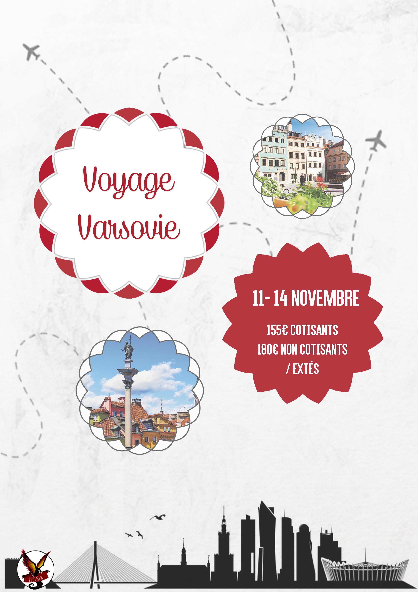
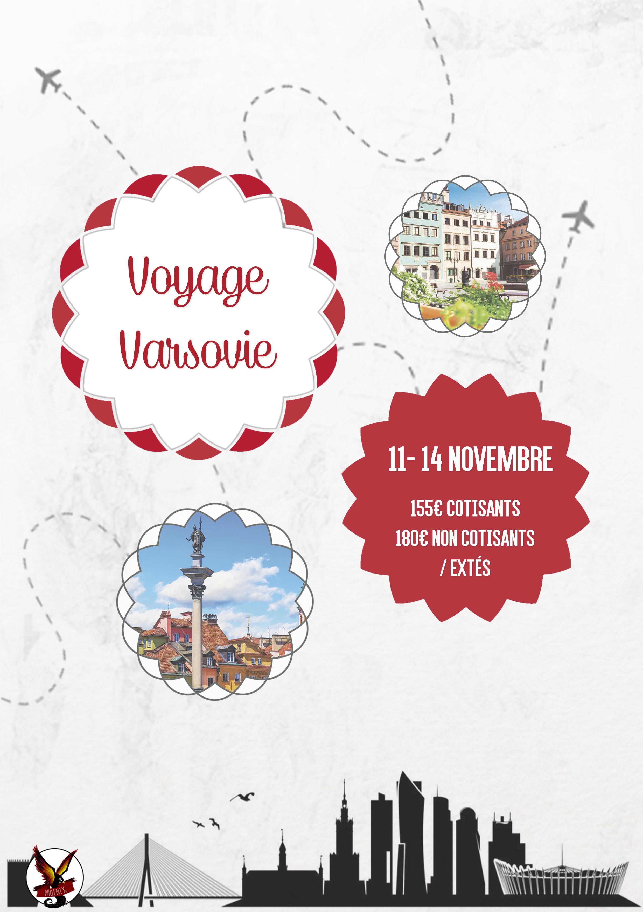

Xuan-Anh Nguyen

Je suis étudiante à IMT-BS en Master 2 Marketing Digital.
Je travaille chez TF1 Studio en tant qu'Assistante Chef de Produit Vidéo.
Pour en savoir plus
EXPERIENCES
COMMUNICATION
J'ai d'abord travaillé sur l'élaboration et la mise en place d'une stratégie digitale pour une start-up de transports (mission Junior-Entreprise) et pour Inventiv IT, une entreprise de conseil en systèmes d'information. J'ai ensuite pu acquérir des compétences plus opérationnelles au sein de M6 Web : création de contenu et de montages vidéos, élaboration d'une ligne éditoriale, et community management pour les pages 6play, Les Reines du Shopping et Scènes de Ménages (Facebook et Twitter).MARKETING
Actuellement je travaille sur les sorties DVD et Blu-Ray de TF1 Studio. Cela comprend notamment: la création et le suivi de fabrication des jaquettes et des rondelles, l'élaboration d'argumentaires de vente pour les distributeurs, et la gestion des campagnes de publicité.HOBBIES
PHOTOGRAPHIE
Je suis passionnée de photos de paysages, et en particulier les couchers de soleil. J'aime aussi prendre des photos portraits. Récemment, j'ai pu faire les photos de mariage de ma cousine.VOYAGES
J'ai eu l'occasion de partir plusieurs fois en Asie et aux Etats-Unis. J'aime y découvrir des cultures différentes. Je reviens d'un semestre à New York et cela m'a donné encore plus envie de voyager dans de nouveaux pays !GRAPHISME
Passionnée par le graphisme, j'ai commencé à faire des créations graphiques sur des forums et des blogs. J'ai ensuite été très investie au sein du Pôle Communication du BDE 2016-2017 et en tant qu’intervenante dans la Junior Entreprise de mon école. J’ai été amenée à créer divers supports de communication (affiches, flyers, logos) pour des évènements associatifs et pour des entreprises (plaquette commerciale). 
